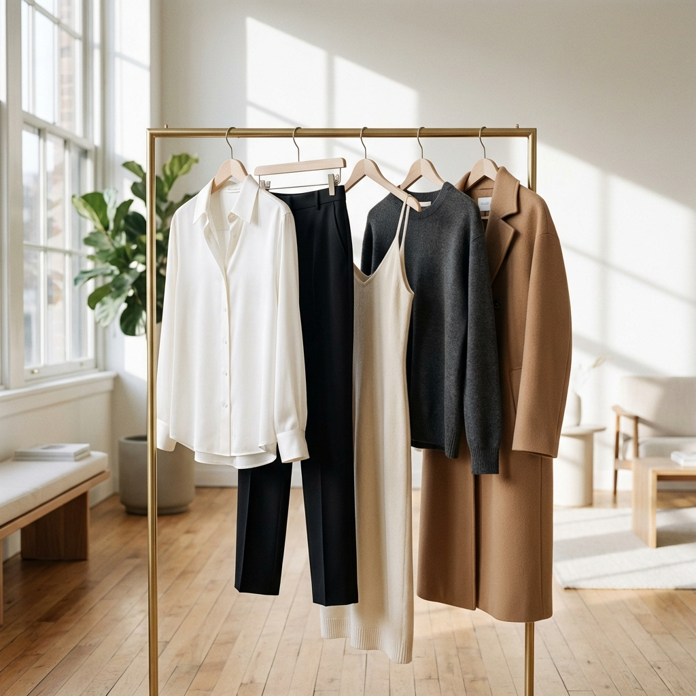

長途飛行與抵達後體面感
腰腹舒適、腿部循環、外套溫差與抵達後拍照，都要在同一套穿搭裡先想好。
閱讀主題 →這個主題群把春夏衣櫥拆成旅行、通勤、鞋包、配件與身型比例，不讓每篇文章互搶同一個關鍵字。
腰腹舒適、腿部循環、外套溫差與抵達後拍照，都要在同一套穿搭裡先想好。
閱讀主題 →
與其追逐新款，不如先確認外套、襯衫、下身、鞋與包是否能互相支援。
閱讀主題 →
衣服不只是好看，還要能減少猶豫、降低出錯率，讓通勤、旅行與聚會都更省力。
閱讀主題 →
通勤、旅行、聚餐與城市散步需要不同鞋款分工，腳感比一雙鞋打天下更重要。
閱讀主題 →
春夏城市移動、機場、咖啡廳與週末行程，都需要一個安全、輕量、比例清楚的包款。
閱讀主題 →
春夏衣物變薄，剪裁、腰線、領口與鞋型比例，比單純買寬鬆更能讓人看起來輕盈。
閱讀主題 →